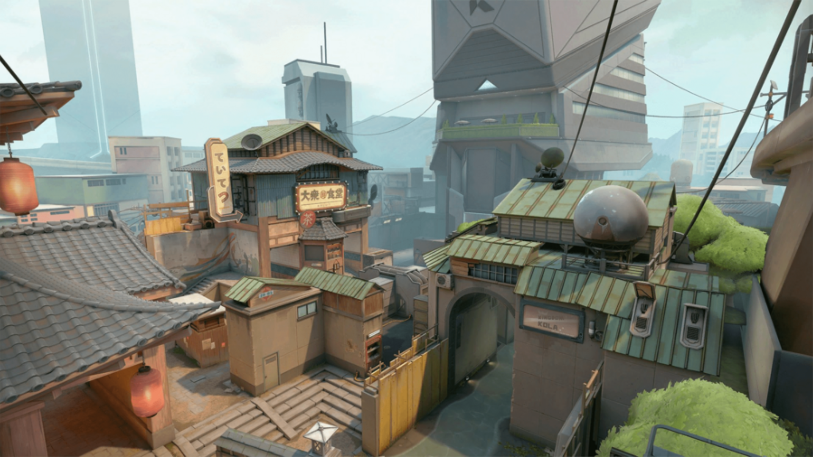
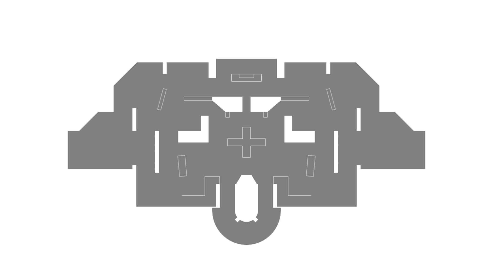
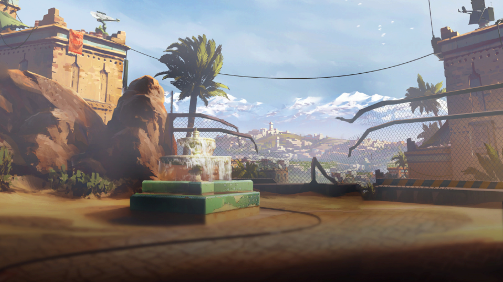
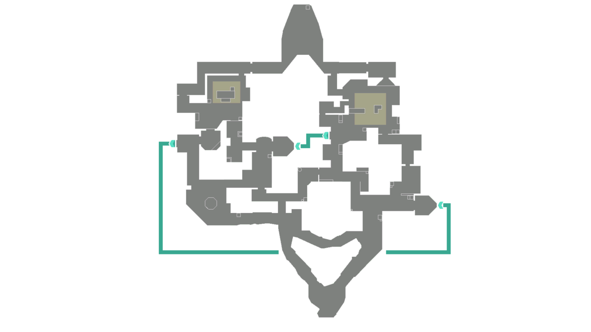
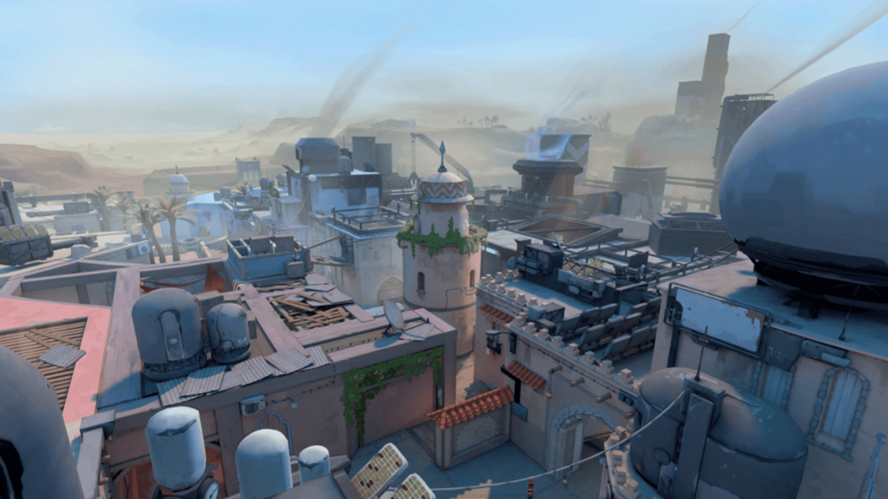
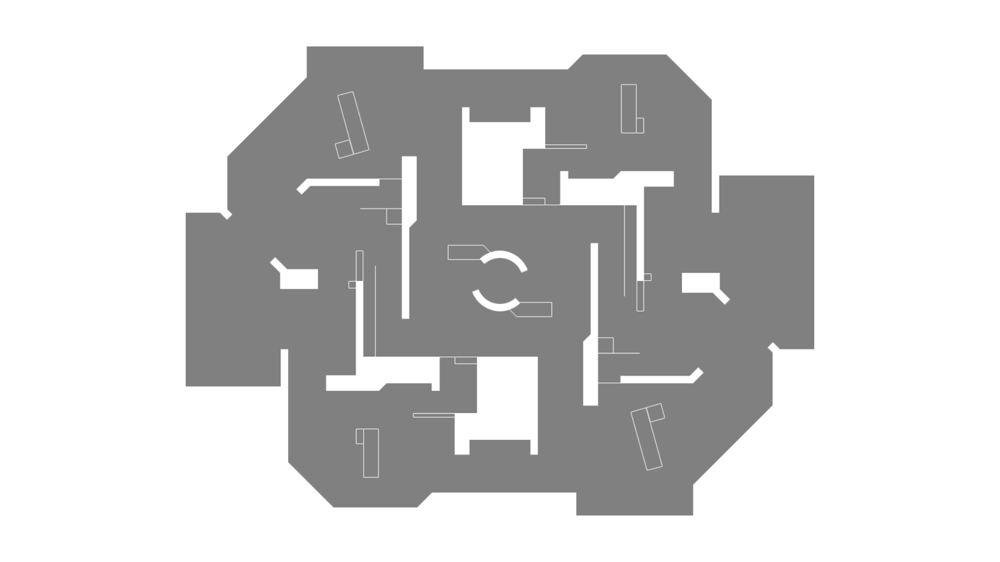
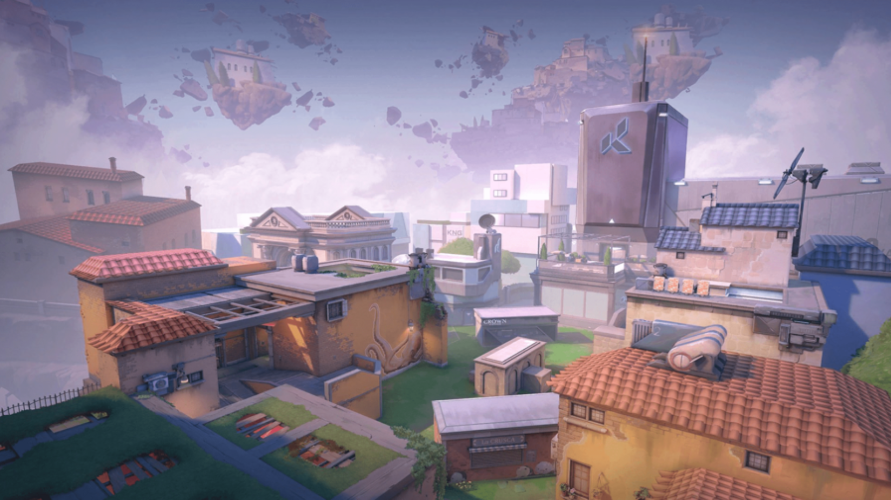
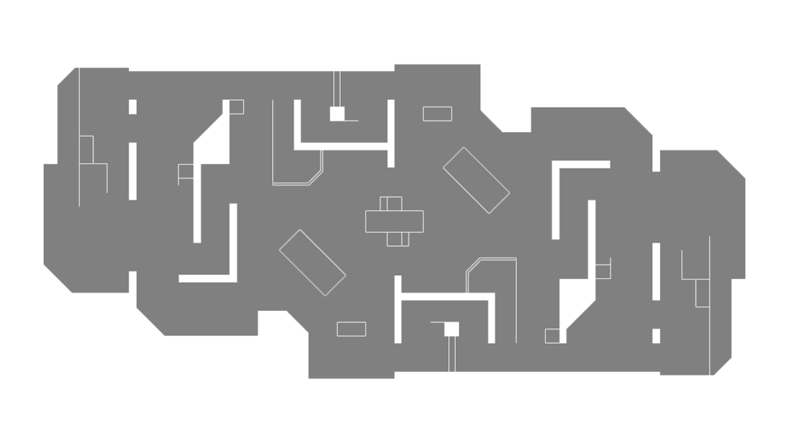

“A map with three bomb sites (A, B, and C) that offers greater strategic variety. Set in a Nepalese temple, Haven demands mastery of vast areas and solid team coordination.”
DISTRICT
“An urban map with narrow streets and tall buildings, District tests players' abilities in close-quarters combat and utilizing high ground for strategic advantage.”




BINDI
“Known for its two bomb sites and teleportation features, Bind allows quick rotations between locations, creating gameplay dynamics that demand awareness of enemy movements.”
KASBAH
“Inspired by villages or fortresses in the Middle East, Kasbah offers winding corridors and hidden areas that provide opportunities for surprise attacks and solid defense.”




PIALZA
“This map is inspired by the Italian plaza with a large square and narrow streets. Pialza demands mastery of open areas and the ability to maneuver in tight spaces, making it a tactically challenging map.”